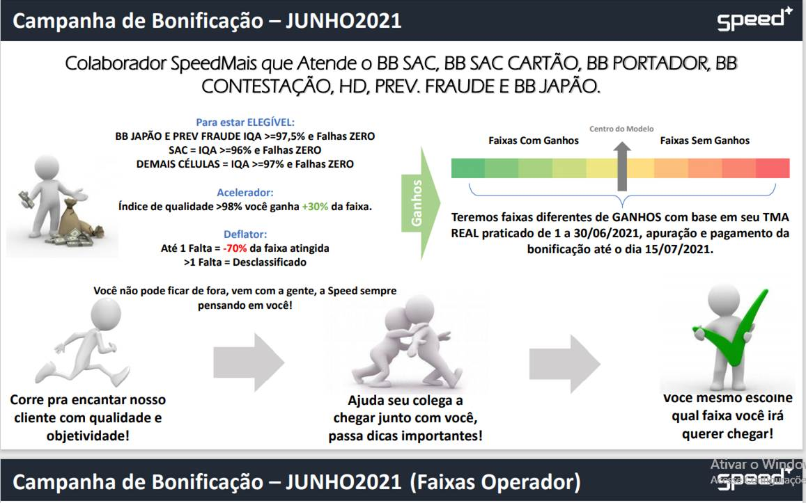

Quem é o supervisor Jadson?
Nascido na cidade de Recife em Pernambuco, Jadson Zoé possui uma vasta experiência em gestão de pessoas, pois atuou como supervisor na empresa Contax/SA durante seis anos, prestando serviço para vários produtos. Ainda na Contax, o mesmo conquistou alguns prêmios por ideias inovadoras relacionados a controle e planejamento corporativo. Hoje atua na Speedmais também como supervisor e vem somando no quesito gestão, criatividade e dinamismo.
"Tenho prazer de fazer parte da historia dessa organização, que trabalha visando os resultados operacionais, sem abrir mão do cuidado com as pessoas. Poder fazer gestão de indicadores sem abrir mão da gestão de pessoas. Minha equipe chamo-os de "Os Melhores", pois é exatamente como nos devemos ver.”
Além da Speedmais, Jadson Zoé teve a oportunidade de trabalhar como atendente de balcão no Novo Caetés Materiais de Construção, Auxiliar Administrativo no ICB-PE e na Contax-SA.
Em sua vida pessoal, Jadson Zoé é cristão protestante e casado, sua formação está em andamento, cursa atualmente Bacharel em Teologia; em seu tempo livre costuma ficar com a família, ir a igreja, assistir filmes e séries, além de ser um entusiasta no mundo da programação e desenvolvimento de sistemas. Sua meta de vida, é a independência financeira para poder aproveitar o máximo da vida ao lado das pessoas que ama.
BONIFICAÇÃO
A partir do mês de junho/2021, a bonificação paga pela Speed, não será mais com crédito direto em conta, os colaboradores aptos a bonificação receberão um cartão pré-pago de benefício, gerado pela empresa Sodexo, o Sodexo Premium, cartão aceito em quase 100 mil estabelecimentos em todo Brasil, e aqui no estado de Pernambuco, são mais de DOIS MIL estabelecimentos!
clica aqui para mais informações sobre o Sodexo Premium Pass!
Para mais detalhes procure o seu supervisor.
ATENÇÃO
A previsão de chegada dos cartões era para o dia 21/06, porém houve atraso na remessa por parte da empresa parceira, o novo prazo é dia 25/06.
Lista de Estabelcimentos
A lista completa de estabelecimentos pode ser consultado diretamente no site da Sodexo, ou no App Sodexo, além disso é possível ver a lista clicando aqui.
Atendimento Sodexo
- FONES:
- 3003-5083 (capitais e regiões metropolitanas)
- 0800 728-5083 (demais localidades)
- E-mail:
- atendimento@sodexo.com (Todos os dias, 24h)
Campanha de Folga - Produtividade
A campanha de bonificação para o mês junho já está rodando, e você pode ganhar mais de R$150,00, a baixo veja as faixas e os valores que são possíveis ganhar, não deixe de conferir também as regras para participação, em caso de dúvidas procurar o seu supervisor!
USO DO CELULAR
Sabemos que o uso do celular no ambiente de trabalho é PROIBIDO, o mesmo deve sempre ser guardo nos armários, junto com os pertences pessoais, toda via, nas área de convivencia "copas", podemos utilizálos.
É evidente que o uso dentro do call center, é estritamente proibido, por razões legais, dado a lei do sigilo bancário, porém o uso do aparelho na área a baixo também é PROIBIDO!
O descumprimento dessa norma, poderá ocasionar penalidades.
Portal de Ideias
Portal criado com o objetivo de encontrar as oportunidades de melhoria, nas rotinas do Banco do Brasil.
Caso você tenha uma sugestão, uma dúvida ou encontrou uma divergencia, acesse o portal de ideias, e faça o envio, a área da qualidade vai averiguar, e encaminhar a resposta o quanto antes.
É de suma importancia o envio dessas informações para melhorarmos a cada dia, o nível de qualidade no atendimento que prestamos.